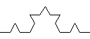
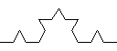 分形 (Fractal) 是一类几何形状. 它们的特点是在任意小的尺度上都有精细的结构. 分形通常可以由一些简单结构通过不断组合, 分裂形成, 即所谓的自相似性 (self-similar): 任意的局部都有和整体相似的形状. 它们与传统的几何(点, 线, 多边形, 多面体等)有很大的不同, 有许多令人吃惊的性质. 例如可以通过分形构造出封闭的几何图形, 它们的面积是有限的, 但周长无限. 又如, 可以通过分形构造出连续但几乎处处不可微的曲线. 分形是自然界中常见的现象: 岛屿的海岸线, 破碎的玻璃边缘等都体现出分形结构. 同时, 分形在艺术创作, 工艺品设计, 建筑中也有用武之地.
在这个 Project 中我们首先以 Koch 曲线 为例, 介绍分形的特征. 随后简单介绍一个画图包. 在实验内容中, 你需要设计并定义一个类. 通过这个类提供的接口, 用户可以完成一些分形的绘制. 通过这个实验, 我们希望帮助你体会使用面向对象方法解决实际问题的基本流程:
Koch 曲线是一种分形曲线. 以下分别是0阶, 1阶, 2阶及3阶 Koch 曲线.
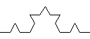
绘制 n 阶 Koch 曲线可以通过以下算法实现:
Koch 雪花是二维平面上由 Koch 曲线组合成的封闭图形. 以下分别是0阶, 1阶, 2阶及3阶 Koch 雪花.


绘制 n 阶 Koch 雪花可以通过以下算法实现:
问题: Koch 雪花的面积是有限的, 但周长是无限. 你能否写出周长和面积的表达式?
StdDraw 包封装了一些基本的画图方法. 可以利用它来绘制简单的集合图形包括点, 线, 矩形, 圆等. 详细的说明可以参见它的文档. 以下列出我们可能会用到的接口:
| 方法 | 说明 |
|---|---|
| StdDraw.line(double x1, double y1, double x2, double y2) | 画一条从 (x1, y1) 到 (x2, y2) 的直线 |
| StdDraw.setXscale(double minx, double maxx) | 画纸 X 轴最左边坐标为 minx, 最右边坐标为 maxx, 默认情况分别为0和1 |
| StdDraw.setYscale(double miny, double maxy) | 画纸 Y 轴最下边坐标为 miny, 最上边坐标为 maxy, 默认情况分别为0和1 |
在绘制分形时, 往往需要计算长度和角度. 可以使用 Java Math 包来完成. 我们可能会用到的函数包括:

 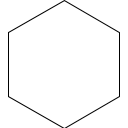
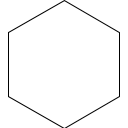


绘制 Koch 雪花. 接收命令行参数 N, 表示图形的阶数 (以下实验中, 参数均通过命令行给出).
在绘制 Koch 曲线时, 将其中的顺时针替换成逆时针, 逆时针替换成顺时针. 用修改后的 Koch 曲线绘制 Koch 雪花.
绘制以下分形.


 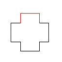 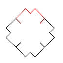
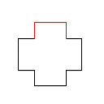 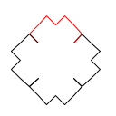 
 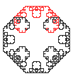
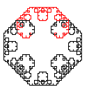

 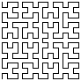
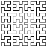